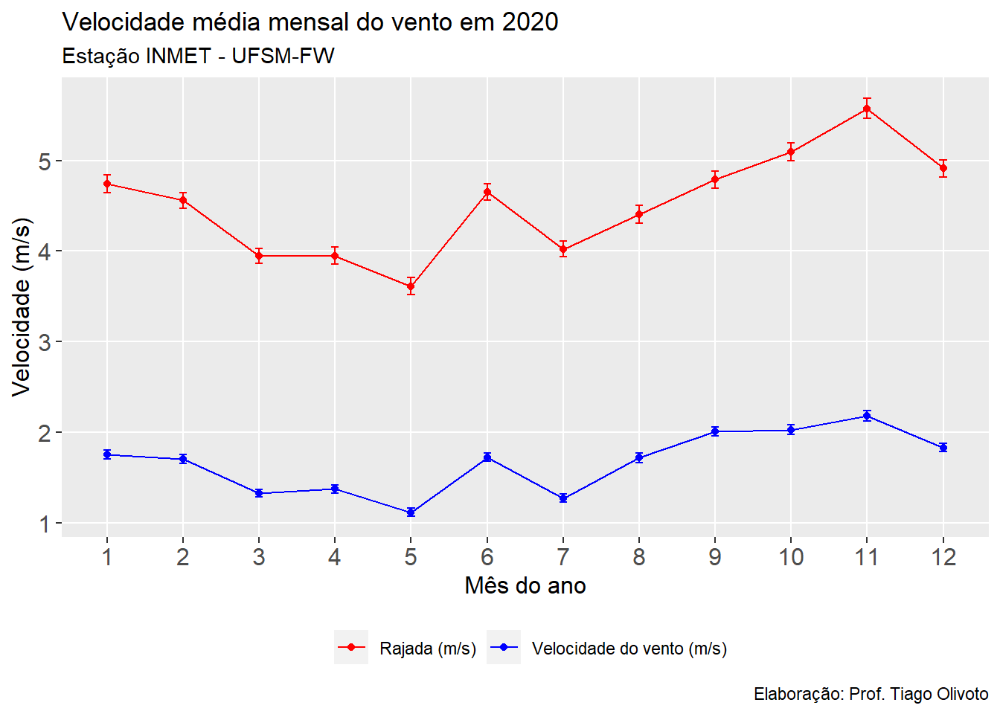
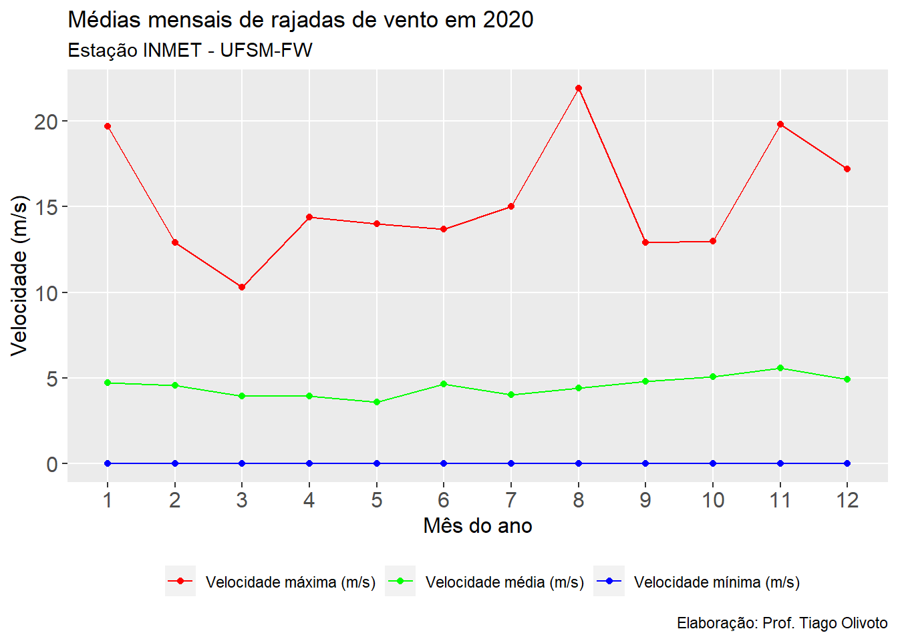
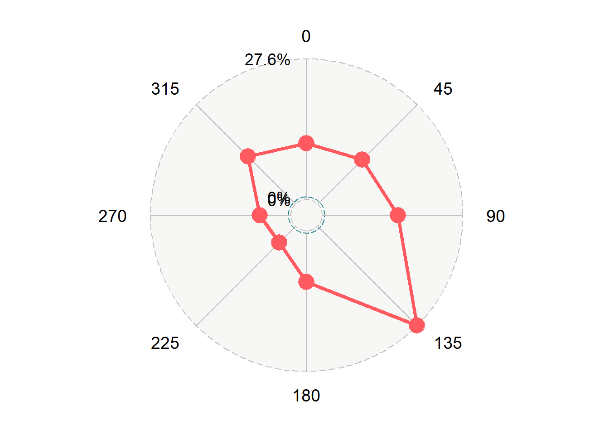

library(tidyverse) # manipulação de dados
library(metan)
library(ggradar) # gráfico de radar
library(rio) # importação/exportação de dados
# gerar tabelas html
print_tbl <- function(table, digits = 3, n = NULL, ...){
if(!missing(n)){
knitr::kable(head(table, n = n), booktabs = TRUE, digits = digits, ...)
} else{
knitr::kable(table, booktabs = TRUE, digits = digits, ...)
}
}Vento
1 Pacotes
2 Velocidade média do vento
clima <- import("https://bit.ly/inmet_fred_2020")
clima_long <-
clima %>%
select(MES, VEL_VE, RAJ_VE) %>%
pivot_longer(-MES)
print_tbl(clima_long, n = 20)| MES | name | value |
|---|---|---|
| 1 | VEL_VE | 0.0 |
| 1 | RAJ_VE | 2.2 |
| 1 | VEL_VE | 0.0 |
| 1 | RAJ_VE | 0.5 |
| 1 | VEL_VE | 0.0 |
| 1 | RAJ_VE | 0.0 |
| 1 | VEL_VE | 0.0 |
| 1 | RAJ_VE | 0.0 |
| 1 | VEL_VE | 0.0 |
| 1 | RAJ_VE | 0.0 |
| 1 | VEL_VE | 0.1 |
| 1 | RAJ_VE | 0.8 |
| 1 | VEL_VE | 0.5 |
| 1 | RAJ_VE | 1.1 |
| 1 | VEL_VE | 0.3 |
| 1 | RAJ_VE | 1.8 |
| 1 | VEL_VE | 1.5 |
| 1 | RAJ_VE | 2.7 |
| 1 | VEL_VE | 1.5 |
| 1 | RAJ_VE | 3.7 |
# confeccionar gráfico
ggplot(clima_long, aes(factor(MES), value, color = name, group = name )) +
stat_summary(geom = "point",
fun = mean) +
stat_summary(geom = "line") +
stat_summary(geom = "errorbar", width = 0.1) +
scale_color_manual(values = c("red", "blue"),
labels = c("Rajada (m/s)",
"Velocidade do vento (m/s)"),
guide = "legend") +
theme(panel.grid.minor = element_blank(),
legend.position = "bottom",
legend.title = element_blank(),
axis.title = element_text(size = 12),
axis.text = element_text(size = 12)) +
labs(title = "Velocidade média mensal do vento em 2020",
subtitle = "Estação INMET - UFSM-FW",
caption = "Elaboração: Prof. Tiago Olivoto",
x = "Mês do ano",
y = "Velocidade (m/s)")
3 Velocidades máximas e mínimas - rajada
vento_max_min <-
clima %>%
group_by(MES) %>%
summarise(max = max(RAJ_VE, na.rm = TRUE),
mean = mean(RAJ_VE, na.rm = TRUE),
min = min(RAJ_VE, na.rm = TRUE)) %>%
select(MES, max, min, mean) %>%
pivot_longer(-MES)
print_tbl(vento_max_min, n = 20)| MES | name | value |
|---|---|---|
| 1 | max | 19.700 |
| 1 | min | 0.000 |
| 1 | mean | 4.743 |
| 2 | max | 12.900 |
| 2 | min | 0.000 |
| 2 | mean | 4.561 |
| 3 | max | 10.300 |
| 3 | min | 0.000 |
| 3 | mean | 3.944 |
| 4 | max | 14.400 |
| 4 | min | 0.000 |
| 4 | mean | 3.948 |
| 5 | max | 14.000 |
| 5 | min | 0.000 |
| 5 | mean | 3.612 |
| 6 | max | 13.700 |
| 6 | min | 0.000 |
| 6 | mean | 4.649 |
| 7 | max | 15.000 |
| 7 | min | 0.000 |
ggplot(vento_max_min, aes(factor(MES), value, color = name, group = name )) +
geom_point() +
geom_line() +
scale_color_manual(values = c("red", "green", "blue"),
labels = c("Velocidade máxima (m/s)",
"Velocidade média (m/s)",
"Velocidade mínima (m/s)"),
guide = "legend") +
theme(panel.grid.minor = element_blank(),
legend.position = "bottom",
legend.title = element_blank(),
axis.title = element_text(size = 12),
axis.text = element_text(size = 12)) +
labs(title = "Médias mensais de rajadas de vento em 2020",
subtitle = "Estação INMET - UFSM-FW",
caption = "Elaboração: Prof. Tiago Olivoto",
x = "Mês do ano",
y = "Velocidade (m/s)")
4 Direção do vento
freq <-
cut(clima$DIR_VE, breaks = seq(0, 360, by = 45)) %>%
table() %>%
as.data.frame() %>%
set_names("Direção", "Dias") %>%
mutate(Direção = paste0(seq(0, 315, by = 45)),
Percent = Dias / 8784 * 100) %>%
remove_cols(Dias)
print_tbl(freq)| Direção | Percent |
|---|---|
| 0 | 10.997 |
| 45 | 12.341 |
| 90 | 14.857 |
| 135 | 27.607 |
| 180 | 10.041 |
| 225 | 4.542 |
| 270 | 6.125 |
| 315 | 13.286 |
# criar um radar plot para mostrar a direção predominante
# do vento
ggradar(freq %>% transpose_df(),
values.radar = c("0%", "0%", "27.6%"),
grid.max = max(freq$Percent))